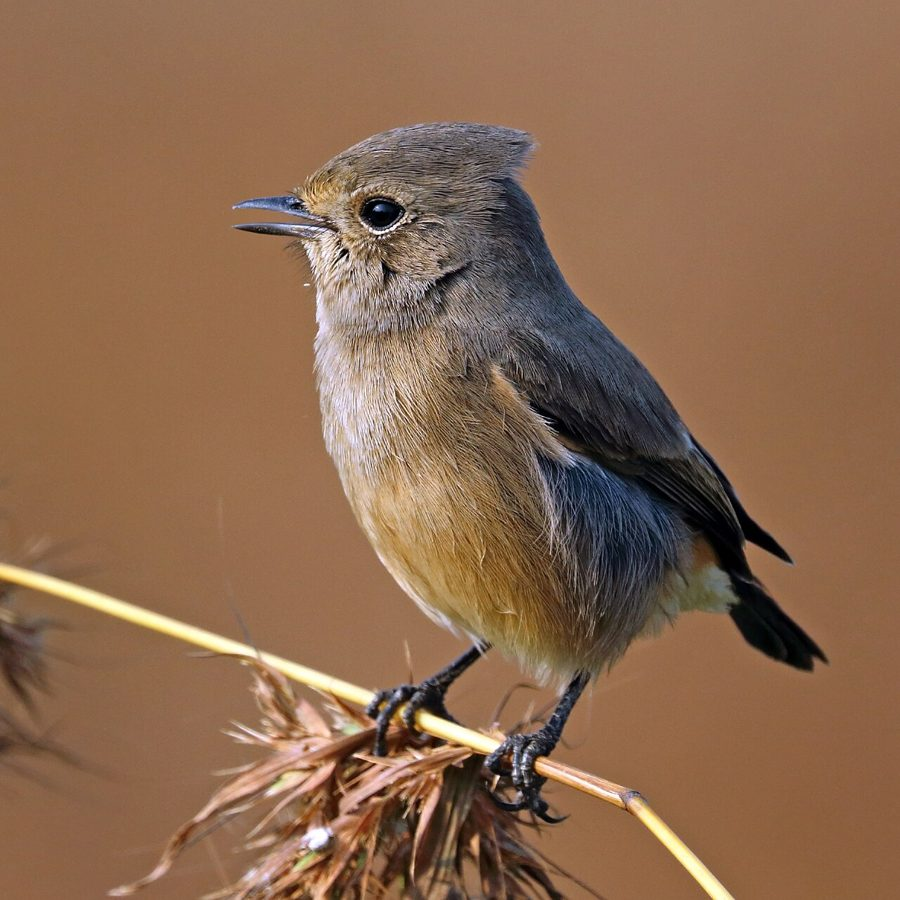

पड्डूPied Bushchat
Saxicola caprata · Muscicapidae · BRD-0070

- Scientific name
- Saxicola caprata (Linnaeus, 1766)
- Family
- Muscicapidae
- Hindi
- पड्डू
- Status here
- native
- IUCN
- LC
When to look कब देखें
Present all year.
पड्डू / Pied Bushchat
Saxicola caprata (Linnaeus, 1766) — Muscicapidae
पड्डू (पीड बुशचैट / काला पिड्ढा) — पूर्वी उत्तर प्रदेश के खुले कृषि मैदानों, झाड़ीदार इलाकों और खेतों की मेड़ों पर पाया जाने वाला एक अत्यंत सामान्य और छोटा कीटभक्षी पक्षी है। इस प्रजाति में नर और मादा के रूप पूरी तरह भिन्न (dimorphic species) होते हैं। वयस्क नर कोयले जैसा चमकीला काला (jet-black) होता है, जिसके पंखों पर एक स्पष्ट सफ़ेद पट्टी (white wing patch), सफ़ेद कमर (white rump) और पेट का निचला हिस्सा सफ़ेद होता है। इसके विपरीत, मादा मटमैले भूरे रंग की होती है जिसकी कमर हल्की कत्थई-लाल (rusty rump) होती है। यह पक्षी अक्सर खेतों के किनारे लगी बाड़ के तारों, बिजली के खंभों या सूखी झाड़ियों के ऊपरी सिरों पर सीना तानकर बैठता है (perches prominently) और वहाँ से उड़ते हुए कीड़ों को पकड़कर वापस उसी जगह बैठ जाता है या ज़मीन पर कीड़े पकड़ने के लिए झपट्टा मारता है।
Quick Identification त्वरित पहचान
| Feature | Description |
|---|---|
| Size | Small, plump insectivore (12.5–14 cm total length); upright posturing |
| Male colouration | Jet-black overall; diagnostic white patches on wings, white rump, and lower belly |
| Female colouration | Earth-brown upperparts and rufous-buff underparts; pale rusty-orange rump |
| Perching | Sits boldly on top of bushes, grass stems, or wires, looking downward for insect movement |
| Bare Parts | Bill is short, black, pointed; irises are dark brown; legs and feet are black |
| Tail-flick | Frequently gives a short downward dip and flick of its tail while perched |
Field tip: Walk along the edges of open agricultural fields or dirt roads. Look for a tiny, upright black bird with bold white wing bars perched on top of a fence wire or a dry weed stalk. If it dives to the ground to catch a beetle, watch for its white rump as it flies. The male is shown in the field tip.
Morphology आकारिकी
Biometrics (typical measurements in the northern Indian plains showing sexual color dimorphism):
| Measurement | Range |
|---|---|
| Total length | 125–140 mm |
| Wing (flattened chord) | 68–78 mm |
| Tail | 50–60 mm |
| Tarsus | 20–24 mm |
| Bill (culmen from base) | 12–14 mm |
| Weight | 14–18 g |
Plumage: Breeding males are completely jet-black, except for the white inner wing coverts (forming a bold white bar along the wing), white rump, white lower abdomen, and white undertail coverts. Females are dark grey-brown above with faint streaks, and pale ochre-brown below, with a distinctive dull orange-rufous rump. The tail is dark brown. Immatures are heavily spotted with buff and brown, resembling the female but with speckled breasts.
Bare parts: The bill is short, stout, and black. The irises are dark brown. The legs and feet are black.
Vocalisations
Pied Bushchats are active singers during the spring breeding season.
- Song: A short, sweet, whistling trill of 4–5 notes: wee-chee-wee-chrr-churrr, delivered with energy from a high perch.
- Alarm / Contact call: A harsh, clicking squeak followed by a whistle: tseck-tseck or tsip-tsip, repeated as it flicks its tail when humans or predators approach.
Behaviour & Ecology व्यवहार और पारिस्थितिकी
- Perch-and-pounce hunting: Feeds by scanning the ground from an elevated perch (fence post, dry plant stalk, or wire). Once it spots an insect, it drops to the ground, captures the prey, and flies back to its perch. It also catches flying insects in mid-air (aerial flycatcher sallies).
- Sentinel posturing: Stands very upright on its perch, acting as a sentinel of its territory, warning other bushchats of danger with alarm calls.
- Tail-flicking display: Constantly flicks its tail downward and raises it quickly while turning on its perch, which may flash its white rump and alert partners of potential prey.
Life Cycle / Phenology जीवन चक्र
- Breeding season: March to July in northern India, with peak nesting in April and May before the monsoon.
- Nesting: Builds a neat, compact, cup-shaped nest of dry grass, roots, and animal hair.
- Nest site: Hidden on the ground inside a hollow under a turf clump, a hole in a mudbank, or low down inside a dry stone wall or brick heap.
- Clutch size: 3 to 4 pale greenish-blue eggs, finely speckled with reddish-brown at the broad end.
- Incubation: 12–13 days, incubated mainly by the female.
- Fledging: Both parents feed the nestlings on grasshoppers and caterpillars. The young fledge in about 13–15 days.
Host Plants or Prey आहार
Primary food items:
- Insects: Grasshoppers, small beetles, crickets, flies, ants, and caterpillars.
- Other invertebrates: Small spiders and earthworms collected from the ground.
Predators / Natural Enemies शत्रु
- Raptors: Shikras (Accipiter badius) and small falcons are major predators of perching bushchats.
- Corvids: House Crows (Corvus splendens) raid nests hidden on the ground or in low walls.
- Mammals: Mongoose, feral dogs, and jackals raid ground nests.
- Reptiles: Garden lizards and snakes consume eggs and chicks.
Agricultural / Human Relevance कृषि प्रासंगिकता
Natural insect controller. Pied Bushchats are highly beneficial to farmers. They consume a large volume of crop pests (like caterpillars, leaf-eating beetles, and grasshoppers) from wheat, mustard, and sugarcane crops.
Conservation and legal status: Protected under Schedule IV of the Wildlife Protection Act, 1972. They are very common and adaptable to agricultural areas, but are sensitive to excessive pesticide spraying which depletes their food and leads to chemical accumulation.
Expected Locally स्थानीय रूप से अपेक्षित
Not a field record. Written from published accounts for eastern Uttar Pradesh. No confirmed local sighting yet — if you have seen it, that is what the atlas needs.
अभी तक स्थानीय पुष्टि नहीं। यह विवरण प्रकाशित स्रोतों से है, किसी अवलोकन से नहीं।
A very common resident throughout the Basti district. They can be found in almost every open field, roadside wire, and waste ground in the Harraiya, Vikramjot, and Basti blocks. They are frequently seen perched on sugarcane crop margins and fence wires bordering village roads.
Distribution वितरण
Global range: Widespread across West Asia, Central Asia, South Asia, Southeast Asia, and parts of Indonesia.
In India: A widespread resident throughout the plains and hills up to 2,000 metres.
In Uttar Pradesh: A common resident state-wide in all agricultural and scrub districts.
In Basti district / eastern UP: Regularly recorded year-round in open areas in all blocks.
Research Questions शोध प्रश्न
Anyone can investigate these | कोई भी इन प्रश्नों की जाँच कर सकता है
- How many insect strikes does a Pied Bushchat make per hour during morning versus midday hours? — Record strike frequencies from a single perch.
- What is the preference of Pied Bushchats for nesting in mudbanks versus stone walls in your village? / पड्डू आपके गाँव में घोंसला बनाने के लिए मिट्टी के किनारों (mudbanks) और पथरीली दीवारों में से किसे अधिक प्राथमिकता देता है? — Survey nest distributions.
- What is the territory size of a resident breeding pair of Pied Bushchats in a wheat field? — Map perch locations and territory boundaries.
- How do Pied Bushchats react when a Black Drongo enters their feeding zone? — Document interspecific territorial displays.
- Does the introduction of plastic fence posts (instead of wooden ones) affect the perch selection of Pied Bushchats? / क्या खेतों में प्लास्टिक के खंभों के उपयोग से पड्डू के बैठने (perch) के चयन पर कोई प्रभाव पड़ता है? — Compare perch occupancy rates.
Similar Species मिलती-जुलती प्रजातियाँ
| Species | How to tell apart | हिंदी |
|---|---|---|
| Oriental Magpie-Robin (Copsychus saularis) | Much larger (19–21 cm); glossy blue-black body with a white belly; long tail; lacks white rump | दइया — बड़ा आकार, नीला-काला रंग, लंबी पूँछ |
| Pied Stonechat (Saxicola maurus / related) | Male has a black head, white neck collar, and orange breast patch; lacks white wing patch | पत्थर-चिट्ठा — नारंगी छाती, सफेद कॉलर |
| Indian Robin (Copsychus fulicatus) | Sandy-black body; rusty-red patch under the base of the tail; holds tail cocked up high | कलचूरी — पूँछ के नीचे लाल रंग, पूँछ ऊपर उठाकर चलना |
Field rule: Small, upright bird perched boldly on wires or weed stalks, where the male is jet-black with a white wing bar and white rump, and the female is brown with a rusty-orange rump, is a Pied Bushchat.
Taxonomy & Classification वर्गीकरण
Original description. Carl Linnaeus described the Pied Bushchat as Motacilla caprata in 1766 in his Systema Naturae (ed. 12, vol. 1, p. 335). The type locality was Luzon, Philippines. Bechstein introduced the genus Saxicola in 1802. The genus name Saxicola is derived from the Latin saxum (stone) and colere (to dwell), referencing its habitat. The specific name caprata is derived from a local Philippine name for the bird.
Subspecies. Ten subspecies are recognized globally. The resident subspecies in northern India and UP is:
| Subspecies | Authority | Range | Notes |
|---|---|---|---|
| S. c. bicolor | Hume, 1873 | Northern India, Pakistan, Nepal | UP subspecies; has a larger bill and more extensive white on the underparts than the southern subspecies |
Family and order placement. Placed in the order Passeriformes, family Muscicapidae (Old World flycatchers and chats).
Phylogenetic notes. The genus Saxicola contains several species of stonechats and bushchats, with Saxicola caprata being distinct due to its black-and-white (pied) coloration.
IUCN status rationale. Listed as Least Concern (LC) due to its massive range and stable population, showing high tolerance to agricultural landscapes and human settlements.
Photo Gallery फोटो गैलरी
References संदर्भ
- Linnaeus, C. (1766). Systema Naturae. Twelfth Edition. Holmiae, p. 335. [original description]
- Ali, S. & Ripley, S. D. (1999). Handbook of the Birds of India and Pakistan. Vol. 9. Oxford University Press, New Delhi.
- Grimmett, R., Inskipp, C. & Inskipp, T. (2011). Birds of the Indian Subcontinent. 2nd ed. Christopher Helm, London.
- Urquhart, E. & Bowley, A. (2002). Stonechats: A Guide to the Genus Saxicola. Christopher Helm, London.
- BirdLife International (2024). Saxicola caprata. IUCN Red List of Threatened Species. Ver. 2024.
- GBIF Occurrence Data — Saxicola caprata, Uttar Pradesh (2010–2025).
Source file: species/fauna/birds/pied_bushchat.md